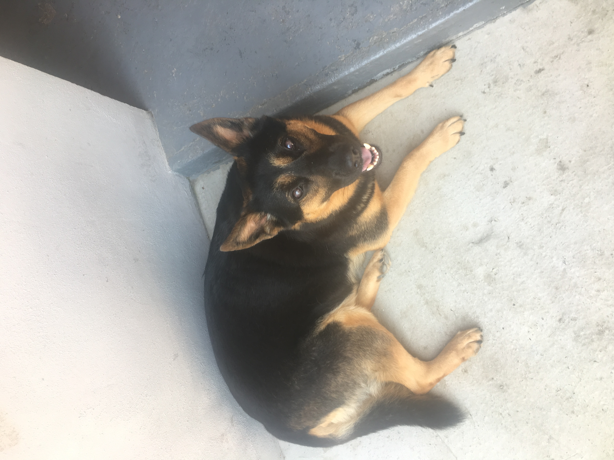

Sasa.. Uneori ma gandesc ca puteam pune capat acestei nenorociri de la inceput.. Cand au adus-o in casa era atat de mica si fara aparare, dar totusi galagioasa.. Nici n-a trecut un an si a devenit o belea: sare, ma impinge, vrea sa ma joc cu ea mereu, ma musca de urechi si de coada, nu ma pot intelege cu ea deloc ! Bine ca sta la Tulcea !
Cora pe de alta parte era o minune de catel ! Ma lasa sa fac ce vreau, o necajeam, ma urcam pe ea, imi dadea mancarea ei si uneori ma primea si la ea in cusca. Dar intr-o zi nu am mai gasit-o acolo.. si acum ma intreb ce s-a intamplat ?!
Pot spune ca ele sunt cele mai bune prietene ale mele, dar pe langa ele mai am o gramada de catelusi si cateluse cu care imi place sa ma joc ! Bine, doar cu jucariile lor, ale mele sunt doar ale mele !!!